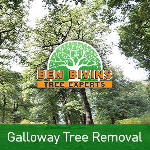
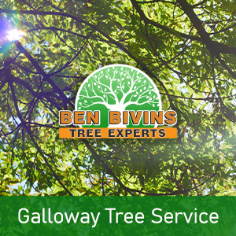

If you are interested in tree removal in Galloway or tree service in Galloway, Ben Bivins Tree Experts has you covered. Ben Bivins Tree Service has been delivering top notch tree service to Galloway for many years.
Galloway Tree Removal – Trust the Experts

Have you got lifeless or aesthetically displeasing trees that need to be removed? Tree removal is really a dangerous job that will require the right equipment, machinery and safety standards. Even though it may be tempting to get rid of a tree on your own from your residence, it can be a decision that puts yourself or other people in danger, without the proper know-how. There can be various reasons why you are looking for a tree removal in Galloway:- Tree is blocking too much light on your lawn
- Tree is deceased or detrimental as well as a probable safety risk
- Tree is too large and poses a threat if large branches drop
- Tree was harmed during a weather event and is beyond the stage of saving
- You are considering remodeling which will inevitably harm the tree
- Tree is dropping a great number of limbs, leaves, or pine needles
We are a fully insured and licensed tree company. Don’t assume the associated risk of using an uninsured tree removal company or relying on a friend to do this kind of work. Our staff is professionally educated and our business carries the proper qualifications to make certain your Galloway tree removal will be performed in the safest and most effective way possible. Tree removal demands the use of serious machinery and hazardous equipment which should only be left to the pros. Leave it to Ben Bivins Tree Experts! Call for an estimate on your Galloway tree removal.
Looking for Tree Service in Galloway NJ?

We perform all facets of Galloway tree service. These solutions include:- Tree Trimming – Is a tree in your yard overgrown? Is your lawn devoid of sunlight caused by an overgrown tree? Trimming a tree’s limbs may make a huge difference and could allow you to maintain a tree you in any other case considered removing.
- Pruning – Keep your trees happy and healthful. Pruning involves assessing a tree’s overall health and making a decision to eliminate limbs selectively to enhance its health and longevity.
- Crown Reduction – We can decrease the scale of your tree’s canopy using this process. Our team will evaluate your trees and make suggestions to eliminate certain limbs which will scale back canopy coverage.
- Emergency Tree Service – Do you have a downed tree that requires prompt attention? Is there a tree which is on the verge of causing damage if it is not attended to immediately? You could be a candidate for emergency tree service.
If you’re a Galloway homeowner requiring tree service, Contact Ben Bivins Tree Experts today. Scheduling varies based on weather, season and our current workload. We will provide you with a quote and let you know dates available for service after evaluating your specific needs.
Your Source for Galloway Firewood
It’s not surprising that a Galloway tree removal company can have a surplus of firewood! If you are seeking firewood for a wood burning stove or fireplace, call us today. Firewood supply availability can vary during the year.